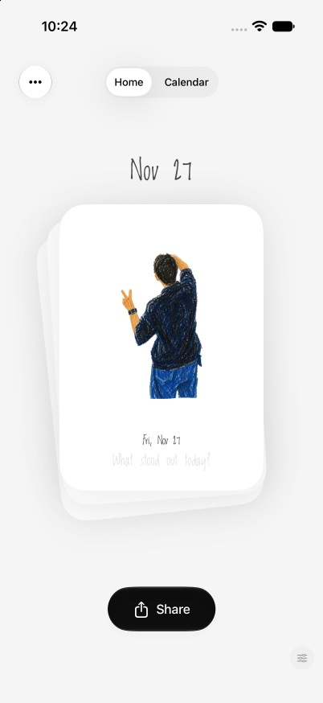
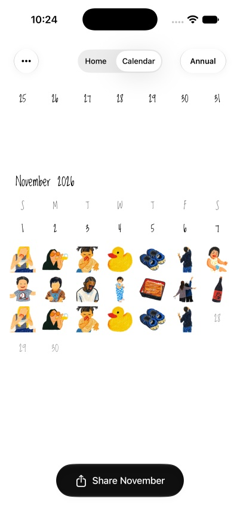
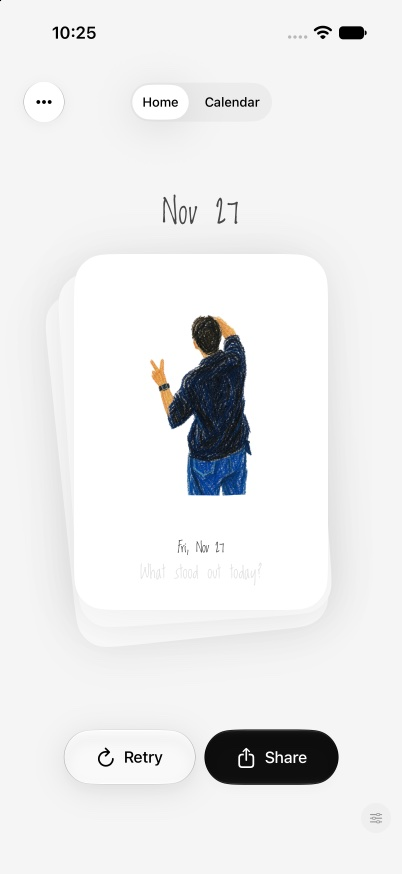
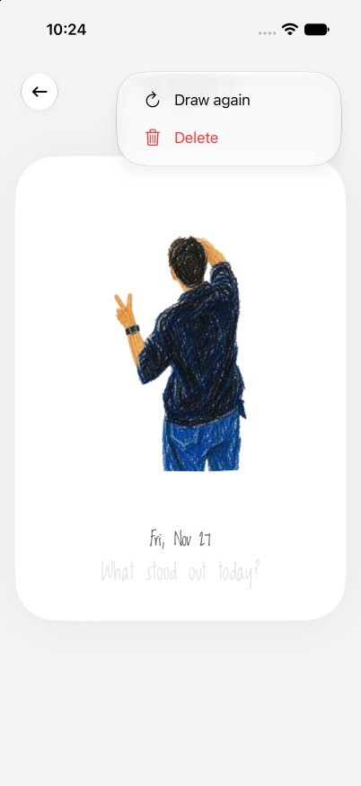
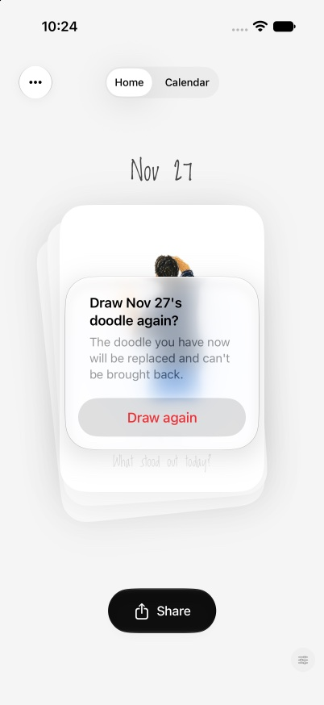
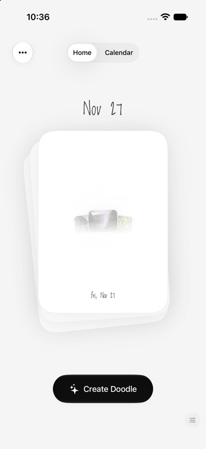
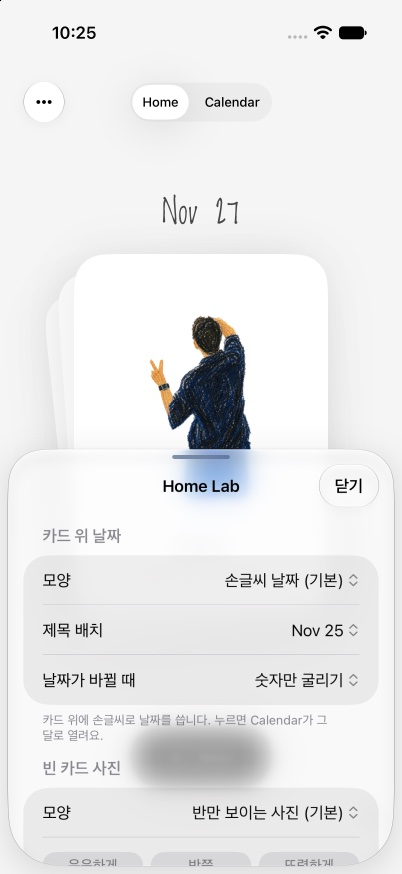

홈 UX 프로토타입 인수인계
형구 → 재진 · 2026-11-27 · iOS (iPhone)
- PR #40은 머지용이 아니에요. 이 브랜치에서 새 브랜치를 따서 작업해 주세요.
- DEBUG 빌드 홈 오른쪽 아래의 옅은 버튼을 누르면 실험 시트가 열려요. 여기서 시안을 바꿔 보며 고르시면 됩니다.
- 고른 다음에는 실험 시트와 시안 전환 코드를 지우고 PR을 올려 주세요.
왜 만들었나
위클리 싱크(11/26)에서 나온 이야기예요. 온보딩은 매끄러운데, 첫 카드 한 장이 나온 다음부터 "이제 뭘 하지?" 하는 막막함이 있어요. 캘린더는 날짜 버튼 안에 숨어 있어서, 직접 써 보게 했더니 캘린더가 있는 줄 모르는 사람도 있었고요.
캘린더처럼 쌓아온 기록이 처음부터 보이면 "어제 것도 채워야지"라는 동기가 생기고, 트라이얼 3일 동안의 경험이 좋아져서 컨버전2(체험→결제)에 도움이 될 거라는 가설이에요.
만든 것
1. Home | Calendar 탭, 카드 위 날짜
세로 iPhone에서 헤더의 날짜 버튼을 Home | Calendar 탭으로 바꿨어요. 날짜는 카드 위에 손글씨 제목(Nov 27)으로 옮겼고, 날이 바뀌면 바뀐 숫자만 굴러가요. Calendar 탭 오른쪽 위의 Annual 버튼을 누르면 연간 화면이 나와요. iPad와 iPhone Duo는 예전 그대로예요.


스펙: docs/specs/2026-11-25-home-calendar-tabs-design.md. 주 단위 스트립(D2·D3·E3), 예전 날짜 버튼, 제목 모션 같은 다른 시안은 실험 시트에서 볼 수 있어요.
2. Retry를 카드 상세의 … 메뉴로
홈 하단의 Retry를 카드 상세 안으로 옮겨 보는 시안이에요. 상세 오른쪽 위의 휴지통이 … 메뉴로 바뀌고, 그 안에 Draw again과 Delete가 있어요. 홈 하단에는 Share만 남고, 버튼이 바닥에 붙어 보이지 않게 32pt 올렸어요.


…를 누르면 Draw again과 Delete가 나와요.
이렇게 동작해요.
- 그리는 중이거나 구독이 없거나 오늘 횟수를 다 썼으면, Retry 버튼을 누를 때와 똑같이 그 자리에서 막혀요.
- 원본 사진이 없는 카드(예전 두들, 동기화로 온 두들)는 상세가 열리지 않아요. 그래서 이런 카드에는 홈 하단 Retry가 그대로 남아요.
- DEBUG 빌드에서만 켜져 있어요. Release는 정해질 때까지 지금처럼 하단 Retry예요.
스펙: docs/specs/2026-11-26-detail-more-menu-design.md
3. 빈 카드에 그날 사진 힌트
그날 두들이 아직 없으면 빈 카드 위에 그날 찍은 사진 세 장을 아주 옅게 겹쳐 보여줘요. "오늘 두들로 만들 사진이 있구나"를 알아차리게 하려는 거예요. 카드를 누르면 지금처럼 사진 고르는 화면이 열려요.
- 지금 기본값: 사진 아래쪽 절반이 카드 종이로 흐려지는 "반만 보이는 사진", 투명도 32%, 크기 68%, 얇은 테두리.
- 스크린샷은 빼고 좋아요 누른 사진을 먼저 보여줘요. 사진 권한은 홈에서 묻지 않아요. 권한이 없거나 그날 사진이 없으면 지금의 낙서 그림이 그대로 나와요.
- 사진은 기기 안에서만 읽어요. 화면에 보이는 날과 양옆 이틀만요.

스펙: docs/specs/2026-11-26-home-photo-hint-design.md. 예시 사진은 시뮬레이터 기본 풍경 사진 세 장을 오늘 날짜로 넣은 거예요. 실제로는 그날 내 사진이 나와요.
실험 시트 (DEBUG 전용)

| 섹션 | 바꿀 수 있는 것 |
|---|---|
| 카드 위 날짜 | 모양(손글씨 날짜 / 주 단위 스트립 D2·D3·E3 / 예전 날짜 버튼), 제목 배치, 날짜가 바뀔 때 모션, 첫 두들 전 화면 |
| 빈 카드 사진 | 모양 프리셋(반만 보이는 사진, 사진 세 장, 색 번짐 + 사진), 투명도·크기·드러남·위치 슬라이더, 테두리 |
| 카드 상세 | 다시 그리기를 상세 … 메뉴에 둘지, 홈 하단 버튼에 둘지 |
| 모두 기본값으로 | 전부 처음 기본값으로 되돌려요 |
이어받는 법
- 브랜치 따기. 형구 브랜치는 기준점으로 남겨 두고 재진 님 브랜치에서 작업해 주세요.
git fetch origin git switch -c bonxn/home-calendar-tabs origin/mikefarfaraway/dood-ui/ux
- 빌드. Xcode 27.1로 빌드해야 해요(26.x는 빌드가 안 돼요).
ios/에서xcodegen generate를 한 번 돌리고dood스킴을 Debug로 실행하면 돼요. iPhone이 연결돼 있으면 저장소 루트에서tools/run-device.sh를 실행해도 돼요(빌드하고 폰에 설치·실행까지 해 줘요).개발용 앱(DOOD dev)이 출시된 DOOD와 위젯·스티커 저장 공간을 같이 써서, dev를 실행하면 출시 앱의 위젯이 바뀔 수 있어요. 자세한 건
ios/AGENTS.md에 있어요. - 실험 시트로 시안 보기. 홈 오른쪽 아래 옅은 버튼 → 실험 시트. 며칠 써 보면서 아래 "정할 것"을 골라 주세요.
- 스펙부터 읽기. 위의 스펙 세 개에 결정한 이유와 지금 값이 적혀 있어요. 결정이 바뀌면 스펙도 같이 고쳐 주세요(저장소 규칙이에요).
- 정리하고 PR. 고른 값을 Release 기본값으로 고정하고, 실험 시트와 시안 전환 코드를 지운 뒤
bonxn/…브랜치로 main에 PR을 올려 주세요. main에 머지되면 TestFlight와 Play 배포가 자동으로 돌아요.
재진 님이 정할 것
① 홈과 캘린더를 어떻게 보여줄지
- 지금 기본값: 탭 + 카드 위 손글씨 날짜.
- 후보: 주 단위 스트립(D3: 오늘까지 7일, 날마다 숫자와 두들)처럼 쌓아온 기록을 첫 화면에 같이 보여주기. 미팅에서 나온 스트릭 느낌도 여기서 검토해 주세요.
- 탭 위치(위 / 아래)도 아직 안 정했어요. 지금은 위에 만들어 뒀어요.
② Retry를 어디에 둘지
- 하단 Retry + Share(출시 버전) vs 상세
…메뉴(하단은 Share만). - 미팅 의견: Retry는 강조할 버튼은 아니고, 필요할 때 갈 길만 있으면 된다. 반대로, 버튼 위치가 화면마다 같아야 깔끔하다는 유저 피드백도 있었어요. 지표를 보면서 정하면 좋겠어요.
③ 사진 힌트를 넣을지, 기본값이 괜찮은지
- 지금 기본값: 반만 보이는 사진, 32%, 68%, 얇은 테두리.
체크할 것
체크 표시는 이 브라우저에만 저장돼요.
시뮬레이터에서 보다가 눈에 띈 것
동작 확인
- 상세
…→ Draw again: 그리는 중, 구독 없음, 오늘 횟수 다 씀일 때 각각 막히는지 - 상세
…→ Delete: 지금처럼 확인을 거쳐 지워지는지 - 원본 사진이 없는 카드(예전 두들, 다른 기기에서 동기화된 두들)에서 홈 하단 Retry가 그대로 나오는지
- Share만 있을 때 버튼 높이와 카드 위치가 어색하지 않은지 (버튼 32pt, 카드 16pt 올라감)
- 카드 위 날짜를 누르면 Calendar 탭이 그날의 달로 열리는지
- 날을 넘길 때 바뀐 숫자만 굴러가는지
- 연말 문구가 Calendar 탭 글자와 번갈아 나오고, 누르면 그해 Annual이 열리는지
- 사진 권한이 없거나 그날 사진이 없을 때 사진 힌트 없이 낙서 그림이 나오는지
- 다크 모드에서 탭, 날짜, 사진 힌트가 잘 보이는지
- iPad와 iPhone Duo는 예전 그대로인지 (이번 변경은 세로 iPhone만)
- Release 빌드에는 실험 시트가 없고 기본값으로만 나오는지
main에 올리기 전에
- 고른 값을 Release 기본값으로 고정
ios/dood/Home/HomeLab.swift와HomeView의#if DEBUG시안 전환 코드 지우기- 스펙 세 개의 상태를 "시안"에서 확정으로 바꾸고, 영향받는 예전 스펙(캘린더 시트, 연말 문구)도 고치기
- 트래킹 플랜 문구와 CSV(
tools/export-tracking-plan.sh) - doodTests 전체 돌리기 (아직 안 돌렸어요)
- Android에 같은 변경 반영할지 정하기 (지금은 iOS만)